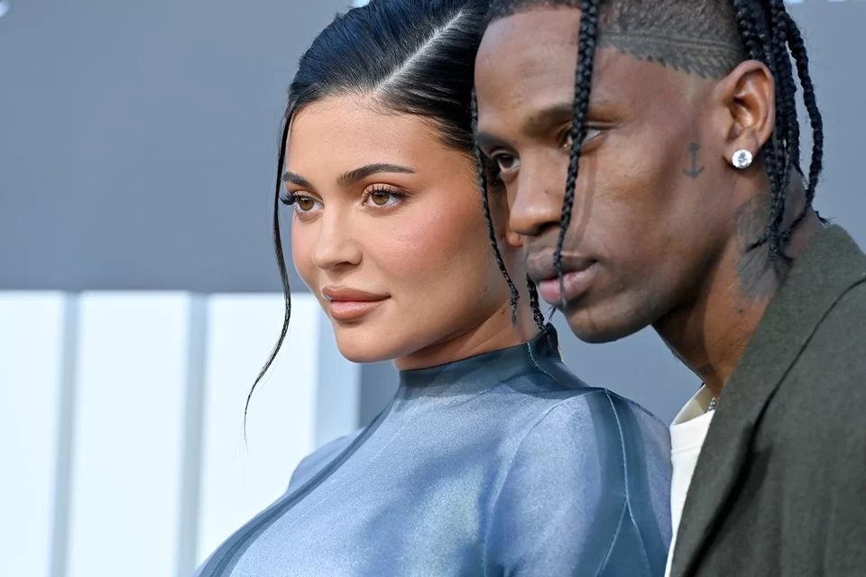
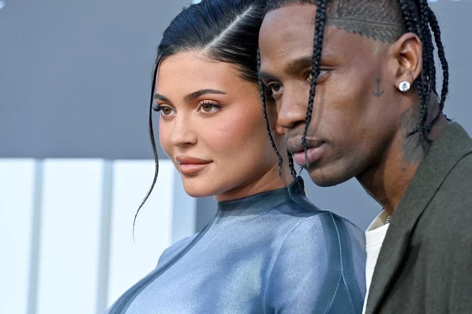
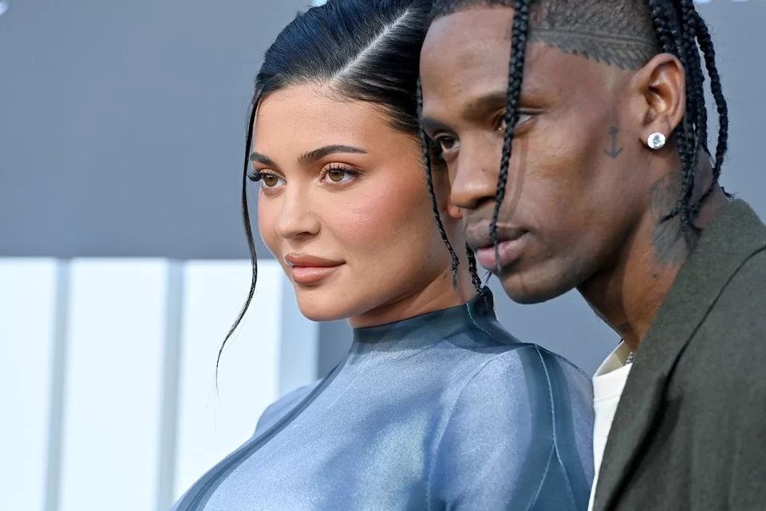

Galeria de fotos
 

Kylie Jenner é uma empresária, influenciadora, modelo e socialite estadunidense. Ela nasceu em 10 de agosto de 1997, em Los Angeles, na Califórnia, e é filha de Caitlyn e Kris Jenner — duas personalidades bastante conhecidas na mídia dos EUA. Caitlyn Jenner, além de ser atriz e modelo, conquistou uma medalha de ouro nos Jogos Olímpicos de Verão de 1976 ao competir no decatlo. Já Kris é uma empresária, produtora e socialite estadunidense, sendo também uma figura famosa na televisão. Não bastasse isso, Kylie é irmã de Kendall Jenner — outra personalidade bastante conhecida. Ainda, ela é meia-irmã das mundialmente famosas Kourtney, Khloé e Kim Kardashian, pois Kris Jenner, sua mãe, foi casada com Robert Kardashian. Diante desse contexto, Kylie teve a vida exposta desde muito cedo. No entanto, mesmo fazendo parte de uma família rica e bastante popular, ela não queria depender financeiramente de seus pais ou de sua irmã e meias-irmãs famosas. Por esse motivo, ainda na adolescência, Kylie Jenner começou a empreender nas áreas de moda e beleza — o que a levou ao posto de mais jovem bilionária do mundo poucos anos depois. Já hoje, além de ser uma empresária bem-sucedida, ela é dona de um dos maiores perfis do Instagram. A sua conta na rede social tem mais de 400 milhões de seguidores. Os conteúdos que Kylie publica têm um grande alcance e costumam influenciar muitas pessoas que desejam ser como ela. Por conta disso, inclusive, o preço de um único post em seu perfil no Instagram pode chegar a mais de US$ 2,3 milhões, segundo a plataforma Influencer Marketing Hub. Impressionante, não é mesmo?
